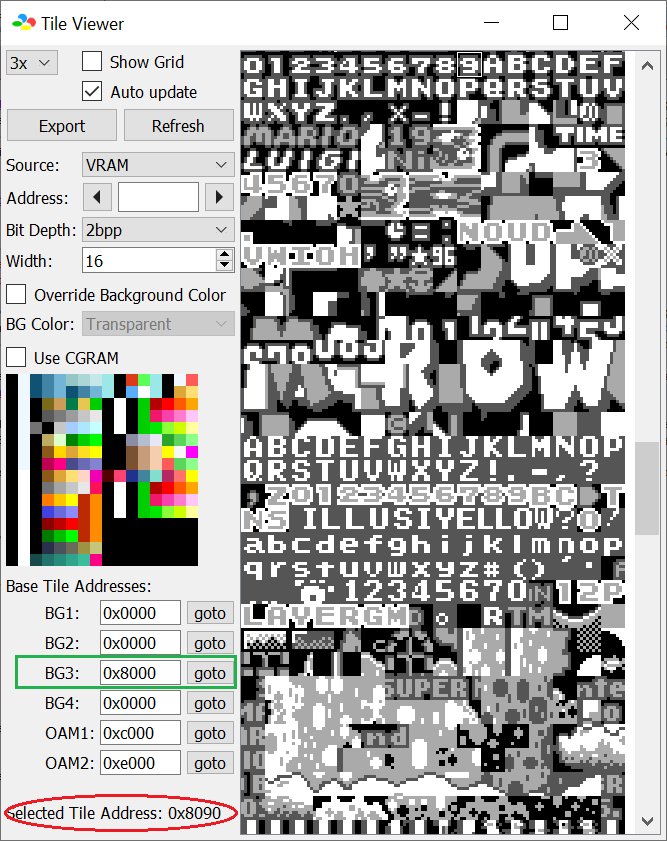

Perhaps, you came to this place because you don't want to use YY-CHR and/or just find the tile graphic directly from the game itself. I have good news,
this is also possible via a debugger. Consider looking at this image:

When you select a tile, you are not given the tile number, but rather the address, as shown circled. For a vanilla SMW, conversion is thankfully the middle two hex digits
of the 4, for example, selecting the “9” graphic is address $8090, which is tile $09, this implies that
each 8x8 tile is $10 bytes long.
For other pages of the tile graphic (equivalent to the TT bits in YXPCCCTT, will be mentioned later), the leftmost digit of the 4 correspond to what page number it is:
| Tile data address | Page number |
| $8XX0 | Page 0 |
| $9XX0 | Page 1 |
| $AXX0 | Page 2 |
| $BXX0 | Page 3 |
Note: Bsnes+ refers these tile numbers as “characters”, according if you were to look at the S-PPU → Tilemap Viewer and select the tiles. Same goes with the SNES dev Manuel and regs.txt.
I am not really sure if it is possible to have layer 3 be offset and its address becomes not a multiple of $10 (say, a tile data instead of being $0000-$000F, it is $0001-$0010), so I designed a javascript tool in the case of this misalignment occurs.
Tile address start: $